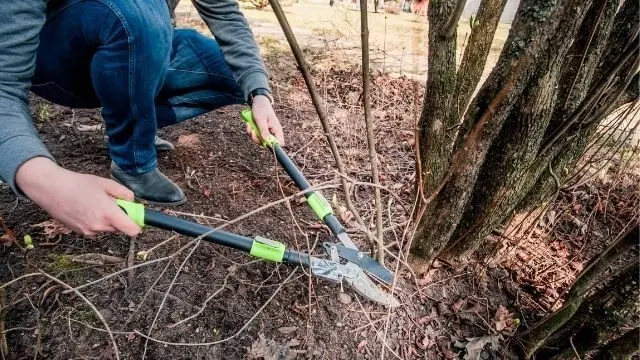

Call Us To Get Your Free Quote !

Shrub Removal Pocatello Idaho
At Pocatello Tree Service, we provide professional shrub removal, hedge clearing, and land prep services for residential and commercial properties in Pocatello, Chubbuck, and throughout Bannock County. Overgrown, diseased, or dying shrubs can clutter your yard, block lines of sight, and decrease your property's curb appeal. Our mobile crew is fully equipped to safely extract overgrown shrubs, hedges, and root systems, reclaiming valuable outdoor space.
We understand that just like a full tree removal, removing mature shrubs is a labor-intensive task that requires the right equipment to avoid damaging surrounding lawns, utility lines, or home foundations. Whether you need a single overgrown Juniper bush extracted or an entire row of invasive hedges cleared out to prepare for new landscaping, we execute the job with precision, clean up all debris, and leave your yard level and ready for new plantings.
Emergency Shrub Removal
Hedges and shrubs can sometimes become urgent safety hazards. During heavy storms, high-desert winds, or heavy winter snow accumulation, old or overgrown bushes can break, lean dangerously over walkways, or obstruct driveway visibility. Furthermore, overgrown shrubs close to structures can harbor pests (such as rodents, spiders, and wood-boring insects) and accumulate dry foliage, presenting a potential fire risk in our dry high-desert summers.
Whether you are clearing out a fire hazard, resolving storm damage, or prepping your yard for fresh landscaping, Pocatello Tree Service provides prompt, professional mobile solutions. We completely haul away all debris, perform any needed stump grinding or root ball excavation, and ensure the site is left clean and safe. Contact us today for a free estimate on your shrub removal needs.
How To Remove Shrubs? And Also, What About Old And Large Shrubs?
You can maybe DIY your shrub removal activity if it’s not too much. Or maybe get a few friends to help you out. But if you don’t have the time or the area to be worked on is super large then you might have to call in the pros.
These shrubs, as mentioned, are invasive and may lead to pests and so it needs to be removed as soon as possible.
Removing shrubs start with de-branching the plant. This simply means that as tempting as it is to go straight for the roots of the shrub, it’s important that you saw off a lot of its branches first. Work your way in and don’t rush for uprooting it right away.
This is especially effective when we’re trying to remove shrubs that are in not so easily accessible areas. Going for the roots right away is not a good idea.
Then, after you’ve hacked away all the branches it’s time to de-root the shrub. You just need to dig deep until the roots are exposed and get ready to remove them. You may need to employ some tools like a saw for this.
Then, the next thing to do is to remove the stump then if you wish you may recycle the branches and the stump. If the shrubs are too overgrown or large as well as old, then let us take care of that for you. We strive to satisfy customers’ tree service needs, and we care about them.
How Much Does Shrub Removal Cost?
Naturally, the cost for shrub removal would depend on the size of the bush. On average, A small bush would be around $15 to $40. A medium-sized bush around $40 to $75 with a larger bush costing around $150 to $300.
Hourly and you’ll probably have to pay around $25 to $75. We offer shrub removal service for a fairly reasonable rate whether it may be for an emergency, for your home, or commercial area.
Questions & Answers
Mature shrubs and hedges have dense, sprawling root systems that are difficult to excavate by hand. Professionals use heavy-duty root extractors and stump grinders to remove the entire root ball, preventing regrowth and preparing the soil for landscaping.
Yes, certain fast-growing shrubs planted too close to a house can retain moisture against the foundation, crack walkways, and clog drainage pipes. Removing overgrown shrubs protects your structural investments.
Hedges and shrubs can be safely removed at any time of the year. However, late fall or early spring is often preferred because the surrounding soil is easier to dig, and it minimizes damage to adjacent lawn and plantings.